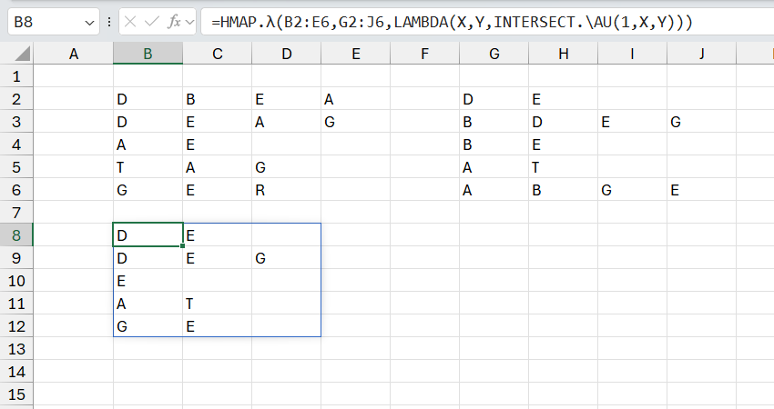

VD1: xác định dữ liệu giao nhau giữa 2 bảng (theo từng dòng)
Chú ý: Để sử dụng hàm, bạn cần sử dụng helper functions của Add-in.
Related function
TEXTTOCOLUMN Tương tự tính năng TEXTTOCOLUMN trên Excel.
COLOR Trả về mã màu sắc của ô chỉ định.
Return to Home